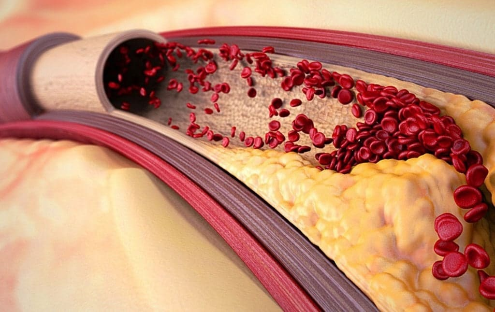

ARTÉRIÁS HIPERTÓNIA KÖZPONT
Business-oldal

Tetszik

lépjen kapcsolatba velünk


18 889 embernek tetszik
ARTÉRIÁS HIPERTÓNIA KÖZPONT
10 millió magyar évekig nem sejti, mitől beteg. A termék amit az orvosok elrejtenek
A szív- és érrendszeri betegségek a vezető halálokok világszerte. A WHO szerint évente 3 millió ember hal meg benne, akiknek egyharmada idő előtt és idős kor előtt hal meg.
Az a veszélyes, hogy a betegség bárkit, még egy fiatalt és egészséges embert is kiválaszthat, és tünetmentes lehet. Sajnos lehetetlen megjósolni, hogy kit és mikor fog utolérni ez a keserű sors, amely éveken át rejtőzhet.
Fejfájás, szívdobogásérzés, fekete pöttyök a szemekben, krónikus fáradtság, apátia és nyomásingadozások olyan szívbetegségek jelei, mint például a magas vérnyomás. A magas vérnyomás gyakran más betegségeket is kísér, és súlyos szövődményeket okoz a szív- és érrendszerben.
A Kutatóintézet egyik, Magyarországon szív- és érrendszeri betegségeket vizsgáló orvosa a szívbetegségek országos helyzetéről szólt, és egyszerű ajánlásokat fogalmazott meg, hogyan lehet könnyen és biztonságosan megszabadulni a betegségtől.
Ehhez nem kell sok időt és pénzt költenie. Van egy megbízható termék, amelyet tapasztalt orvosok ajánlanak. És minél hamarabb intézkedik, annál jobb.
Szerkesztőségünk felhívta Kuncz Izabellát a tévéműsorvezetőt, aki egy hatékony magas vérnyomás elleni készítményről mesélt, amely megmentette édesapja életét.

Kuncz Izabella tévéműsorvezető:
` Édesapám 67 éves, magas vérnyomású, a mentőautó legutóbbi látogatása alkalmával az orvosok azt tanácsolták neki, hogy vezessen vérnyomásnaplót. Az aznapi mutatók egyszerűen elmentek a skálától: 227/115, 226/114, és így tovább a nap folyamán, egymás után több napon át.
Néha az is előfordult, hogy a tonométer egyszerűen nem tudta kinyomni a nyomását, és hibát adott! Rossz elképzelni, hogy milyen nyomás nehezedhetett rá abban a pillanatban...
A legrosszabb az, hogy az apukám nem érez semmit, még akkor sem, ha a vérnyomása 230 felett van. Amikor dolgozni kell mennem, attól félek, hogy apámmal történhet valami, és nem tudok neki segíteni.
Egy műsor felvételen hallottam, hogy minden 7. magyar meghal szívbetegségben, és ebből minden 5. teljesen váratlanul, amikor a nyomásmutatók sokáig normálisak voltak, vagy egyáltalán nem diagnosztizáltak szívbetegséget.
Az orvosok azt mondták nekünk, hogy a magas vérnyomásra nincs gyógymód. Ezért félévente járunk vizsgálatra, injekcióra. Aztán ismét skálán kívüli a vérnyomás napokig. Kiigazítottuk a táplálkozást, adtunk hozzá enyhe fizikai aktivitást, de nem volt eredmény.
Egy ismerős kardiológus mesélt az új, egyre népszerűbb termékről. Azonnal megrendeltem.
Bár hogy őszinte legyek, remény az egyáltalán nem volt. De egy barátom azt mondta, hogy a több mint 70%-kal javítja a szív- és érrendszer működését.
És meglepő módon, apukám jobban érezte magát a szer után: a vérnyomás lassan kezdett helyreállni, a rohamok ritkábban fordultak elő. Most hála istennek már rég elmentek.
Eddig majdnem 6 hete használjuk a -ot. – a megváltásunk!! Milyen szerencsések vagyunk, hogy rátaláltunk. Próbálja ki, és meg fog lepődni az eredménytől! Végre mély lélegzetet vehet az örömtől, hogy olyan terméket talált, amely segít.`
A Magyarországi Egészségügyi Intézet kardiológusával beszélgettünk. Bővebben mesélt a magas vérnyomásról, és értékelte a cseppek hatékonyságát. Íme, amit megtudtunk:
A hipertónia tünetei
A hipertónia — a szív- és érrendszer betegsége, amelyet a vérnyomás stabil emelkedése okoz.
Számos betegséget kísér, és gyakran veszélyes szövődményeket okoz a szív- és érrendszerben: stroke, szívinfarktus, hipertóniás krízis és sok mást.

Egy stroke-ban meghalt személy agyának képe
A magas vérnyomásnak a következő tünetei vannak:
- fejfájás;
- felgyorsult szívverés;
- fekete pontok vagy foltok a szem előtt, homályos látás;
- zaj a fülben;
- krónikus fáradtság;
- apátia, idegesség, álmosság;
- súlyos szédülés;
- hőérzet a testhőmérséklet emelkedése nélkül.
Miért olyan veszélyes ez a betegség?
Gyakran nincsenek tünetei. A hipertóniás betegek 90%-ában a nyomásnövekedés nem okoz változást a közérzetben.
Ha figyelmen kívül hagyja ezt a betegséget, elkerülhetetlenül súlyos betegségekhez vezet, amelyek valódi veszélyt jelentenek az életére
Számos veszélyes szövődményt okoz, és gyakran más betegségek is kísérik (stroke, miokardiális infarktus, cerebrovaszkuláris baleset, aorta ruptura, veseelégtelenség és mások). Ha bármilyen tünetet észlel magán, ez arra utal, hogy a magas vérnyomás már szövődményeket okozott. Ezért haladéktalanul cselekedni kell és meg kell szabadulni a hipertóniától.
Egészséges és fiatal embereknél is előfordulhat.
Nem kezelhető véglegesen, ennek eredményeként olyan terméket kell választania, amely hosszú ideig használható, és nem károsítja az egészségét.
Az esetek 17%-ában hirtelen halál következik be.
Szakértői vélemény
"Sajnos az esetek túlnyomó többségében az artériás magas vérnyomás nem gyógyítható, hosszú távú, élethosszig
tartó terápia szükséges.
Nagyon fontos a diagnózis szakaszában a megfelelő kezelés előírása. Ha a kezelést hirtelen leállítják, az a
vérnyomás gyors emelkedéséhez vezet.
A szív- és érrendszeri megbetegedések kezelésében a fő probléma az, hogy a betegeket leggyakrabban olyan
szokásos kezelési rend szerint írják fel, amelyek mellékhatásokat okoznak, vagy ellenjavallatok miatt
egyáltalán nem írhatók fel.
Ezért 2020-ban megkezdtük a hypertonia termék fejlesztését. Ennek érdekében összegyűjtöttük
a leghatékonyabb komponenseket, és az így kapott fejlesztést pácienseinken teszteltük".
A segít a vérnyomás hosszú távú normalizálásában és egyéb szív- és érrendszeri betegségek kialakulásának megelőzésében, nem okoz mellékhatásokat és ügyfeleink 99%-ának megfelelő.
Aki veszélyben van
Vannak ilyen kockázati tényezők:
- a szív és az erek egyéb betegségei;
- túlsúly, elhízás, cukorbetegség;
- túlzott sóbevitel, alultápláltság;
- alacsony mobilitás;
- időjárás változás, mágneses viharok.
Szenzációs felfedezés a Magyar Egészségügyi Intézet tudósaitól
Az orvosi kutatások szerint a szív- és érrendszeri patológiák és szövődmények kialakulásának üteme az elmúlt években rohamosan nő.
Ha nem tesz sürgős intézkedéseket, vagy nem alkalmaz eredménytelen kezelést, akkor elkerülhetetlenül erőteljes kóros folyamatok indulnak el a szervezetben, ami súlyos következmények fokozott kockázatához vezet.
Az a baj, hogy a vérnyomás csak idővel nő, ami hozzájárul az erek és a belső szervek pusztulásához.
„A Magyar Kutatóintézet tudóscsoportja 2020 óta fejleszti a szív- és érrendszeri betegségek innovatív termékének formuláját.
A létrehozásakor a tudósok gondosan kiválasztották az összetevőket és azok arányait. A termék hatékonysága klinikailag bizonyított. Több mint 200 önkéntes bevonásával végeztek egy tanulmányt is. Néhányuk placebót ivott, mások pedig - -t. Az eredmény kellemesen meglepte a tudósokat.
Egy hét cseppek alkalmazása után az erek elkezdenek helyreállni.
Sajnos a megfelelő táplálkozásra és testmozgásra való éles átállás nem adhat garanciát arra, hogy biztonságban van, és a probléma megszűnt. Ezenkívül a hirtelen változások árthatnak, mert a szervezet stressz alatt lesz.
A modern élet körülményei között nem lesz olyan könnyű megváltoztatni szokásait, és lemondani kedvenc ételeiről és italairól. Hatékonyabb lesz a használata: segít megerősíteni az erek falát és normalizálni a vérnyomást.
A hipertónia egyre gyakoribb a fiatalok körében, és kezdetben tünetmentes lehet. Speciálisan megalkottuk a -ot, hogy egészségesnek és boldognak érezze magát!
A összetevői
A cseppek létrehozásához csak természetes és bevált összetevőket használtak. A — egy 100%-ban természetes növényi kivonatok komplexuma. Melyek segítenek biztonságosan csökkenteni a vérnyomást, normalizálják a szívizom munkáját és megakadályozzák a koleszterin plakkok képződését az artériák falán. A kompozíció a következőket tartalmazza:
galagonya kivonat — segít eltávolítani a koleszterin plakkokat az artériák faláról, és javítja a szövetek és a szív vérellátását. Segít helyreállítani az erek és a kapillárisok rugalmasságát;

anyafű kivonat — segít enyhíteni az érgörcsöket és normalizálni a vérnyomást. Segít megszüntetni az idegességet, a légszomjat, a fejfájást és a fülzúgást. Javítja a hangulatot és normalizálja az alvást;

komló gyümölcs kivonat — segít megtisztítani a vért, megszüntetni a kis aneurizmákat és normalizálni a szívritmust. Segít megelőzni a szív- és érrendszeri betegségek kialakulását: szívinfarktus, szélütés stb.;
zsurló kivonat — segít megerősíteni és helyreállítani az erek falát, megszüntetve azok összes mikrokárosodását;
hypericum kivonat — segít megtisztítani a vért, megszüntetni a kis aneurizmákat és normalizálni a szívritmust. Segít megelőzni a szív- és érrendszeri betegségek kialakulását: szívinfarktus, szélütés stb.;
A cseppek rendszeres bevitele erősíti az ereket, javítja a szövetek és a szív vérellátását, segít megszüntetni a légszomjat, a fáradtságot és a lábak duzzadását. Segít megelőzni a szív- és érrendszeri betegségek kialakulását: szívinfarktus, angina pectoris, szívritmuszavarok, érelmeszesedés stb.
Hogyan működik a
A cseppek 3 szakaszban működnek:
- Segítenek a vérkeringés normalizálásában
- Segít kiküszöbölni a rossz keringés következményeit
- Segít növelni az erek falának szilárdságát és rugalmasságát.
Támogatják a keringési rendszert, amelynek köszönhetően a vér az edényeken keresztül minden szervbe és szövetbe áramlik. Az artériák elágaznak, és kapillárisok hálózatát alkotják, amelyben anyagcsere megy végbe a vér és a szövetek között. Segítenek feloldani az ateroszklerotikus plakkokat és a vérrögöket.
Segítenek csökkenteni az olyan betegségek tüneteit, mint a magas vérnyomás, fejfájás, szédülés, láz a szervezetben. Segít normalizálni a súlyt és a lipidanyagcserét.
Ez segít megelőzni az új plakkok képződését, és 9-szer csökkenti a stroke kockázatát.
Alkalmazás: Évente 2 alkalommal diagnosztizált betegséggel, megelőzés céljából 1,5 évente egyszer. Az alkalmazás időtartama - 1,5 hónap, a keringési zavarok súlyos tüneteivel - 2 hónap. A legjobb eredményt 30 napos vagy hosszabb használat esetén éri el.
Kedvezmények: A gyártó rendszeresen akciókat tart, és lehetővé teszi a jövedelmezőbb vásárlását. Különleges promóciók vannak a polgárok különböző kategóriái számára, a menedzser mesél róluk.
Ár: A cseppek költsége bármilyen jövedelemmel rendelkező személyek számára elérhető.
Szállítás: Nem kell a gyógyszertárakban keresnie a cseppeket, vagy el menni egy átvevőhelyre. Ehelyett a futár megbeszéli Önnel a megfelelő időpontot, és kézbesíti az árut.
FIGYELEM: érvényes a gyártó akciós ajánlata. Ne hagyd ki a lehetőséget, próbáld ki a -ot 50% kedvezménnyel!

2785
Szőke Cintia
Hosszú ideig magas vérnyomásban szenvedtem, folyamatosan elveszttettem az
eszméletemet. A munkahelyen már megszokták a kollégák, nekem rohamaim vannak. Megugrik a vérnyomás,
fáj a fejem, belázasodom. Éjszaka tachycardiám van. Az orvosok megijesztettek a stroke lehetőségével,
mert az erek nem bírták az ilyen ingadozásokat. Féltem, mert nagyapám agyvérzésben halt meg.
Véletlenül tudtam meg a cseppekről, láttam egy említést egy orvosi cikkben, és úgy döntöttem, hogy
kipróbálom. 4 hete szedem. Ennek eredményeként a vérnyomásom stabilizálódott, a fejfájás megszűnt és
egy hónapja nem zavart. Fiatalnak, egészségesnek és energiával telinek érzem magam. Mindenkinek
ajánlom!
38
2 napja
Tetszik
Válasz
Több
Sághy Borhala
Már megkerültem egy tucat kardiológust, de hiába. Mindenki felírja a saját
gyógyszereit, minden össze van zavarodva, a tabletták egy rakás mellékhatást okoznak, semmi sem segít.
Napközben több vérnyomásemelkedés is előfordul. Sokáig próbáltam megtalálni a megfelelő módot, és csak
a -val kezdtem jobban érezni magam. A 3. napon gyengébbek lettek a tünetek, végre! már
feladtam...
54
2 napja
Tetszik
Válasz
Több
Szatmáry Zita
Az orvosom artériás hipertóniát és sinus tachycardiát állapított meg nálam.
Kardiológushoz küldtek beutalóval konzultációra, I. fokú artériás magas vérnyomást és sinus
tachycardiát is diagnosztizált. Barátaimtól hallottam a -ról, egy héttel a bevétel után
minden tünet eltűnt. Ezen nagyon meglepődtem. Most 20 évesnek érzem magam, egészségesnek és
boldognak!!!
81
3 napja
Tetszik
Válasz
Több
Lehel Erik
Még jó, hogy vannak orvosaink, akik végzik a munkájukat! Olyan érzés, mintha
a többiek csak orvost játszanának, mindent tövig felírnak, és csak még jobban szenvednek. Jómagam
nagyon drága gyógyszereket vásároltam, amelyeket a kórházban írtak fel nekem. De csak átmenetileg
enyhítették a tüneteket. Ezután önállóan tanulmányoztam az internetes ajánlatokat, és megvásároltam a
-ot. Ez az egyik legjobb megoldás a szív- és érrendszeri betegségek elleni küzdelemre!
Megkönnyítette az életem! A előtt 52 évesen tehetetlen öregembernek éreztem magam. Eddig
egy kurzust végeztem. Ezt megelőzően vérnyomáscsökkentő tablettákat szedtem. Állandóan fájt a fejem, a
szívem, apátiám volt, és nem volt öröm az életben. Ezért azt tanácsolom, hogy bármilyen áron rendelje
meg ezt a kiegészítőt, nem fogja megbánni! Számomra úgy tűnik, hogy az orvosok szándékosan elrejtik
előlünk ezeket a cseppeket, mert jövedelmező számukra, ha beszívják azokat az árukat, amelyekért a
gyártók fizetnek.
90
3 napja
Tetszik
Válasz
Több
Schulteisz Ladomér
Nagynéném ujjai és lábujjai elkezdtek zsibbadni, az orvos ajánlott egy
érrendszeri gyógyszert, de az nagyon drága, és a kommentekben azt írják, hogy bélrákot okoz. Végül úgy
döntöttünk, hogy követjük egy barátnőnk tanácsát, és megvásároltuk a -t. 1 hónap után
elmúlt a zsibbadás. Sőt, a haj, a bőr, a körmök minősége javult. Volt energia, vidámság, a vérnyomás
megszűnt zavarni.
48
4 napja
Tetszik
Válasz
Több
Thury Flóra
61 éves vagyok és 5 éve kezdtem el tisztítani az ereket. A
segít megőrizni az egészségemet és az energiámat. Nagyon jól érzem magam, bár sok kollégám már
meghalt. Az erek tisztítása 100%-ban szükséges!
50
5 napja
Tetszik
Válasz
Több
Király Farkas
Elvégeztem 1 kúrát, és CSODÁLATOSAN érzem magam. A vérnyomás
nem ugrik meg, a fejem nem fáj. Ez már nagyon régóta nem történt meg. Mindenkinek ajánlom :)
42
5 napja
Tetszik
Válasz
Több
Barabás Samuka
Most abban a korban vagyok, amikor vigyáznom kell az egészségemre. Talán a
-val kellene kezdenem. Ezen kívül nagyon könnyen használható.
12
5 napja
Tetszik
Válasz
Több